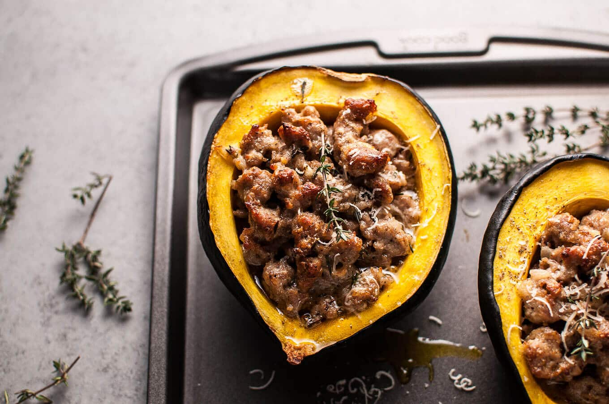
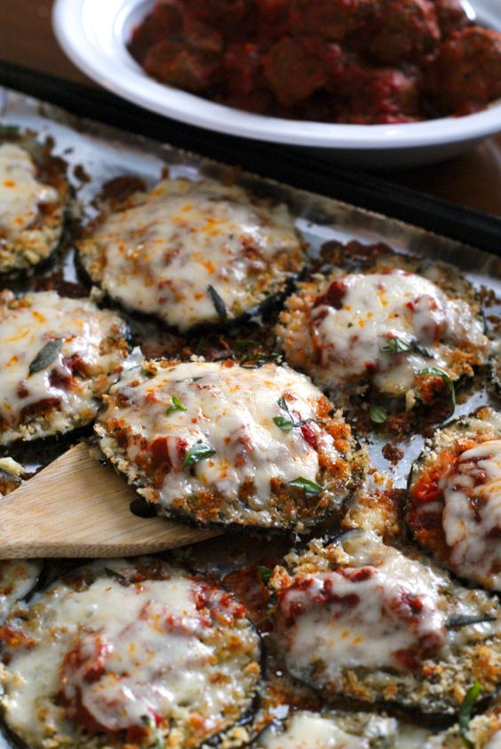

Recipes
Sausage and Parmesan Stuffed Acorn Squash

Ingredients
- 2 acorn squash
- 4 Italian pork sausages
- Salt & pepper, to taste
- Butter
- 1/2 onion, chopped
- 2-3 cloves garlic, minced
- 1/2 tablespoon Worcestershire sauce
- 2 sprigs thyme
- 1.5 cups freshly grated parmesan cheese
Instructions
- Preheat oven to 375F and move the rack to the middle position.
- Cut each acorn squash in half and scoop out the innards. Place them on a baking sheet (face up) and sprinkle with salt & pepper. Place a small piece of butter in each half. Roast for 30 minutes.
- Meanwhile, take the sausages out of their casings, and crumble them into a pan on medium-high heat. Brown for 5-7 minutes and break each piece down further with a spoon as they're cooking.
- Add the onion to the pan and cook for five minutes, stirring occasionally.
- Remove the pan from the heat, and add the garlic, Worcestershire sauce, thyme leaves (remove from stems), parmesan, and more salt/pepper if desired.
- Take the squash out of the oven and fill each half with the sausage mixture. Roast for an additional 30 minutes.
Sheet Pan Eggplant Parmesan

Ingredients
- 1 medium eggplant, cut into 1/4-inch slices
- 2 eggs
- 1 Tbsp water
- 1 cup panko breadcrumbs
- 1/4 cup grated parmesan cheese
- 1 tsp dried oregano
- 1 tsp dried basil
- 1/2 tsp garlic powder
- 2 Tbsps olive oil
- 1 (25 ounce) jar tomato sauce
- 8 ounces mozzarella cheese, shredded
- julienned fresh basil, optional
Instructions
- Spread the sliced eggplant in a single layer onto paper towels. Generously salt the eggplant and let it sit for 15 minutes. Flip the eggplant, salt the other side, and let sit for another 15 minutes. Rince the eggplant with water and pat dry with clean paper towels. (This process will draw out the excess moisture and bitterness from the eggplant. I have seen some skip this step entirely.)
- Preheat your oven to 375 degrees. Combine the panko breadcrumbs, parmesan cheese, dried basil, dried oregano, and garlic powder in a shallow dish. In a separate dish, lightly beat the eggs with the water.
- Dip the eggplant slices in the egg and then the breadcrumb mixture, pressing the breadcumbs onto the eggplant to evenly coat both sides.
- Drizzle a foil-lined sheet pan with the olive oil and spread it around to cover the whole pan. Place the breaded eggplant in a single layer on the baking sheet.
- Bake in the preheated oven for 15 minutes, flip the slices, then bake for an additional 10 minutes on the other side. Spoon sauce onto each slice and top with shredded cheese. Return to the oven and continue baking for an additional 10 minutes, or until the cheese is melted. Top with fresh basil right before serving.
Easy Gumbo Recipe (Instant Pot Version)
Ingredients
- 1 pound Andouille Sausage, cut into 1/2” slices
- 1 pound chicken thighs, cut into 1-2” pieces
- 1/4 cup + 1 Tablespoon avocado or olive oil
- 1/2 cup white whole wheat flour
- 1 Tablespoon Cajun Seasoning
- 1 Tablespoon Dried Thyme
- 1 1/2 teaspoons Smoked Paprika
- 1 Large Onion, chopped
- 1 Bell Pepper, chopped
- 3 Celery Stalks, chopped
- 4 Garlic Cloves, chopped
- 2 Quarts Chicken Stock
- 2 cups Tomatoes, Diced
- Sea Salt and Black Pepper to taste
- 3 cups cooked rice
Instructions
- Set pressure cooker to sauté and heat 1 tablespoon of oil.
- Once oil is hot, add the sausage and brown (without the lid) on both sides, about 5 minutes.
- Remove the sausage to a plate being sure to leave oil/drippings in the pan.
- Add the cut chicken thighs to the pot and brown on both sides, about 6 minutes.
- Remove chicken and add to the plate with the sausage.
- Add remaining 1/4 cup of oil, flour, Cajun seasoning, thyme, and smoked paprika to the pot.
- Stir constantly and cook until the roux is the color of peanut butter, about 5 minutes.
- Add onion, bell pepper, celery, and garlic to the darkened roux.
- Cook, stirring often, until vegetables are soft, about 5 minutes.
- Return the cooked Andouille sausage and chicken to the pressure cooker.
- Add chicken broth and diced tomatoes to the pressure cooker.
- Stir well to combine being sure to remove anything sticking to the bottom of the pot.
- Add the pressure cooker lid and bring to pressure.
- Cook for 15 minute on manual setting and then allow to naturally release for 15 minutes.
- Release any remaining pressure and remove the lid from the pressure cooker
- Taste the gumbo and add, as needed, sea salt and black pepper.
- To serve: place a 1/2 cup of white rice in a bowl and top with gumbo.
Traditional Indian Samosas
Ingredients
Filling
- 1 cup dry USA green or yellow split peas, rinsed
- 2.5 cups water
- 2 medium potatoes
- 1 teaspoon salt
- 1 tablespoon canola oil
- 1 medium red onion, chopped
- 1.5 teaspoons minced fresh ginger
- 2 teaspoons ground coriander (with a few whole coriander seeds sprinkled in)
- 1 teaspoon garam masala
- 1 to 2 teaspoons salt
- Vegetable oil for deep frying
- Chutney or tomato ketchup, for dipping
Dough
- 2 cups all-purpose flour (whole wheat flour preferred)
- 1⁄2 teaspoon salt
- 1⁄2 cup plain yogurt
- 1⁄4 cup canola oil
Instructions
- In a medium saucepan, combine split peas and water. Bring them to a boil, reduce heat, cover, and simmer until peas are tender, about 35 to 45 minutes. Drain peas, and set aside.
- Boil potatoes with 1 teaspoon salt until they are tender. Drain, and mash the potatoes.
- Meanwhile, prepare the dough. Combine flour and salt in a medium-sized bowl. Make a well in the center and add yogurt and canola oil. Mix ingredients until they form a ball.
- Turn the dough onto a lightly floured surface and knead it until it is smooth, about 2 to 3 minutes. Cover dough, and set it aside for 30 minutes.
- Heat 1 tablespoon canola oil in a heavy skillet. Add onions and cook, stirring frequently, until they are translucent. Add ginger, and continue stirring for another minute. Add coriander, garam masala, and salt, and cook, stirring, for about a half minute more. Add potatoes and peas, and mix well. Set filling aside.
- On lightly floured surface, roll out the dough into a rectangle measuring about 12 x 18 inches. Cut dough into 3-inch squares.
- Place 1 scant tablespoon of filling on each square. Use your fingers to moisten edges of dough with water, and fold dough diagonally in half to make a triangle. Press edges firmly together to seal in the filling.
- Heat 1 inch oil in a heavy skillet until it is hot but not smoking, about 350° to 380°. Fry samosas until golden, turning once. Drain samosas on paper towels, and keep them hot.
- Transfer samosas to a heated serving dish, and serve them with chutney or tomato ketchup.
https://marginmakingmom.com/instant-pot-zuppa-toscana/
http://www.foodnetwork.com/recipes/food-network-kitchen/almost-famous-broccoli-cheddar-soup-recipe-1972744
https://joyfoodsunshine.com/pretzel-bread/#_a5y_p=5581628
http://www.everydayjenny.com/instant-pot-creamy-chicken-and-wild-rice-soup/#more-1149
https://www.pickyeaterblog.com/traditional-indian-samosas/